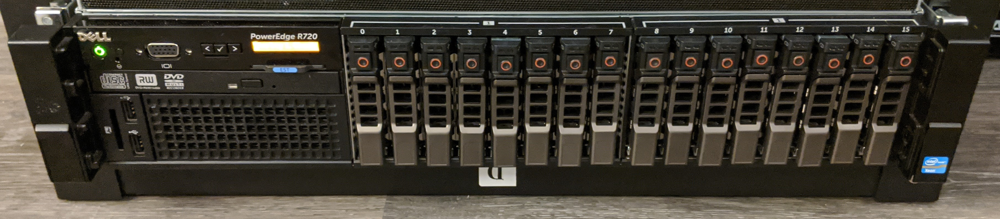

Homelab Act 3: NAS, ZFS, and NFS
For the last 172 days (according to uptime on one my routers), I've been setting up a small homelab. Homelabs are kind of cool, and, the setup has been interesting. I'll be writing a few posts explaining the steps I took.
- Part 1 VPN setup
- Part 2 Servers and 10GbE
- Part 3 (this post)
- Part 4 Services and Applications
In this homelab post, I'll be detailing how I converted the R720 I bought on eBay into a NAS server on my local network. This was an expensive project; I'm not sure it was worth the time or energy. I'll add more discussion on the usability of something like this in the 4th part of this series.
Why?
I recently had an old SSD fail. I had no idea it was going bad until I tried to open a handful of old photos and found that they were corrupt. Some of the smart counters for the drive apparently had ticked up, but I never had set up anything automated to monitor this, so it was missed. Of course, the files were all backed up, but this still isn't a great experience to have.
I wanted a safe place to store some important files. I wanted these files to be available on all of my devices. I didn't really want to use a cloud service for this, since I've been trying to scale back my cloud dependence and vendor lock-in problem (but maybe I should have).
For a local disk, I would certainly need some form of RAID array (and of course backups, but that's for a later post).
Currently in the root of the /nas contains:
- audio samples
- facebook/google data exports
- iso files (windows iso, recent Arch iso, etc)
- some ripped CDs that are not on streaming services
- RAW photos
- old programming projects zipped up
- a bunch of papers as pdfs in a folder, unorganized
- a bunch of old school work
- org mode files
Right now, all of this is is only using about 500 gigs of space.
These files used to live on either 1) a spinning rust drive on my desktop or 2) my home directories on multiple machines (not really synced other occasional rsyncs of subsets of the data). This post will discuss setting up the ZFS and mounting it as a NAS.
Setup and Planning
Since I was only using about 500 gigs of space, I wasn't going to need some super high capacity system. I decided to instead try and build something that would be 1) lowish power (spinning rust is power hungry), 2) pretty "fast", 3) "fun".
Since this is all going into my only server, I'd also need some space for all of the other services I wanted to toy with, so I came up with this:
| Data Category | Space | Speed | Redundancy |
|---|---|---|---|
| Personal Data | 2TB should last years | fast-ish | needs to be highly redundant |
| server drive | 500GB more than enough | fast | doesn't need to be redundant |
| OS drive | 500GB | fast | doesn't need to be redundant |
The server has 16 2.5 inch SAS/SATA drive bays connected to a "SAS backplane." The backplane is connected to a Dell-rebranded LSI hardware RAID controller card. The RAID controller card is connected to the CPU via 8 Gen 3 PCIe lanes (in a Dell-proprietary form factor slot).
The backplane on server hold 16 drives and has across 8 SAS ports. Each SAS port can do 6 Gbit/s, so we can do (6*8)/8 = 6 Gbytes/s on the RAID controller + backplane, in theory. This is well matched with the PCIe bandwidth, which is theoretically around 7.9 gigs a second.
The good thing about all of this is that the backplane/RAID controller were well integrated into Dell's remote management tools. The bad thing is of course that many of these parts are proprietary and have strange feature sets, but more on that later.
Thinking about the bandwidth capabilities of the server, my redundancy desires, and my low capacity requirements, I decided to try and build this entire thing with SSDs. SAS SSDs designed for servers aren't cheap, so I decided to look at low-end consumer SATA SSDs.
Apparently, most RAID systems don't really like expanding the number of disks in the array. I decided to price out filling up the system with disks.
I ended up with 4 disks from 4 different vendors (reduce risk of all of them failing at the same time):
- 4x ADATA SU635 480GB 3D-NAND SATA 2.5 inch Internal SSD
- 4x SanDisk SSD PLUS 480GB Internal SSD - SATA III 6 Gb/s
- 4x Kingston 480GB A400 Sata3 2.5 Internal SSD
- 4x PNY CS900 480GB 2.5” SATA III Internal Solid State Drive
From amazon, this ended up costing like $800, which is, uh, not very cheap. I also had to grab some disk enclosures on eBay to install these disk into the server.
Filesystem
Next thing up, I needed to pick a filesystem/RAID scheme to run on these drives.
Hardware RAID
I bought the "upgraded" RAID controller when purchasing the server, since I wanted to keep my options open. After thinking a bit harder about hardware RAID, it doesn't really seem that interesting to me. Hardware RAID might be a win if I didn't have tons of RAM to spare, or if I was very CPU constrained. Since neither of those are the case, it seems wiser to use my powerful Xeon CPUs and the large amount of ECC RAM available on the server to do fs checksumming and for caching purposes.
ZFS
Awesome ZFS features:
- Great reliability features (checksumming in metadata)
- Snapshots
- Very flexible RAID configurations
- Theoretically easy to setup and try out
- Fantastic monitoring tools (check out the influxdb intergrations)
- Great reviews online
- Great arch-wiki documentation
- Apparently no RAID write hole problems despite not having a dedicated write-flush backup battery like HW would have
- many more
Linux software RAID (mdadm and LVM)
Looks great, but not as featureful as ZFS. If I try ZFS out and it doesn't work, I figured it would be easy to switch.
BTRFS was eliminated early as it seems to still be fairly immature.
Installation
Physical Install
Getting these drives into the server was easy. Just screw them into the enclosures:
Then pop them into the front mounting slots: 
Configure RAID
Next up was configuring the RAID controller to get out of the way. I wanted the raid controller to just pass the disks through to the operating system. It also seemed important to make sure that I could access the S.M.A.R.T. status of the devices.
Surprise surprise, the upgraded RAID controller I purchased is not able to do this! Apparently, the lower end model is, but only if you flash the thing with some special alternative firmware that breaks all of the fancy Dell integration.
Regardless, I booted the machine with some of the drives installed to see what would happen. The dell controller was not happy with the consumer drives. It marked a number of them as degraded, and thought that the kingston drives were SAS drives (maybe they actually are? never figured this out). Fortunately, it seemed like all of the drives were at least working.
Downgrade controller
After a very very large amount of time spent googling around, I found some references that said that, if you get the downgraded Dell H310 mini controller, it is possible to flash the controller to an alternative LSI "IT mode" firmware. The IT mode firmware is supposed to allow you to just pass the disks through to the OS.
Standard flashing procedures won't work though, because Dell looks for some special "I'm a Dell Special Thing" from the device at boot time. If you flash the board incorrectly, the server will refuse to boot in any way when the board is installed (so you can't reflash it).
There's a guy on eBay who will sell you on of these pre-flashed. Search for "Dell H310 mini monolithic K09CJ with LSI 9211-8i P20 IT Mode" then just buy one from him if you want to do this.
I of course didn't go down this path. Instead, I found some PDF file on archive.org that contained some instructions for flashing the controller. Since references to this file seem to all go stale, I'm mirroring it here, although I keep redoing my blog so this link will probably go stale too. I booted an Arch Linux iso through the remote managment interface and configured everything from Arch.
To follow these instructions, you'll have to find the LSI firmware files. Since LSI has been acquired like 30 times, its not entirely clear where to find them. To find these file names, figure out who owns LSI now and go look for their firmware downloads page.
You're looking for:
9211_8i_Package_P20_IR_IT_FW_BIOS_for_MSDOS_Windows.zipor9211_8i_Package_P20_IR_IT_FW_BIOS_for_MSDOS_Windows.zip. After unzipping, you'll findFirmware/HBA_9211_8i_IT/Firmware/HBA_9211_8i_IT.binUEFI_BSD_P20.zip. After unzipping, you'll finduefi_bsd_rel/Signed/x64sas2.rom
Once you have these, you should be able to follow the remaining instructions in the PDF.
There's a note in the PDF that says:
Should you want to boot off a drive attached to the H310MM, you will also have to flash the appropriate bootrom (mptsas2.rom for BIOS, x64sas2.rom for UEFI).
This is a very true statement and you'll be stuck scrathing your head for a long time if you miss/ignore it. Make sure to also flash the efi firmware to the device.
Disk inventory
Since the Dell firmware integration is all broken with the new firmware, I needed to be able to keep track of which drive was which without having being able to easily toggle the chassis LEDs.
I booted an Arch ISO and started dd=ing zeros to each disk through =/dev/disk/by-id/, then recording the serial numbers of the disks whose activity LEDs lit up.
For some reason, the activity LEDs won't light up on the ADAT disks, so I just popped those in and out and watched the kernel logs.
All of the serial numbers and slot assignments are saved in a safe place. This is probably important to have when disks need replacing.
Install Operating System
From the Arch iso, I partioned the disk in the 0th slot, and installed Arch using the standard install guide.
rootdelay
The OS install when smoothly, so I thought I was finally done with this ordeal once Arch finished bootstrapping the system.
Wrong!
Linux consistently failed to boot. I'd get through a GRUB screen, load initrd, then consistently fail to find the root partition. The root partition was on the same drive as GRUB, so this doesn't really make sense.
Apparently, when booting, the EFI system initializes the controller to get the bootloader, Linux initrd, etc. But then, when the initrd starts, something in Linux's drivers causes the SAS controller to reinit. The controller takes a long time to initialize, so Linux will have a hard time finding it's boot disk.
Adding rootdelay=600 to my kernel command line got me passed this problem; now Linux waits for root partition to show up for 5 minutes before giving up on the filesystem.
Configure ZFS
Just follow the instructions on the Arch Wiki.
I installed the DKMS version of ZFS so that I would be able to pacman -Syu and have pacman attempt to rebuild ZFS with the latest kernel.
I setup two zpools.
One for my personal files named nas and another for server stuff named server.
These are mounted, creatively, at /nas and /server.
nas
For the nas zpool, I'm using 12 disk with data striped across two RAIDZ2 zpools.
In other words, each of the RAIDZ2 pools can loose two disk without failing.
All of my data is striped across these two pools.
From a performance perspective, check out this post:
For performance on random IOPS, each RAID-Z group has approximately the performance of a single disk in the group.
So, the performance isn't going to be fantastic on the nas array, if I set it up like this.
I'll pretty only be aggregating across the two stripes, so, assuming read/write of 500mb/s on a standard SATA ssd, I should expect read/write speeds around a gig a second for the pool.
Fortunately, that's exactly what I'm getting.
I have no idea if this striping/raidz combination is a good idea or not, but it seems like a reasonable safety/performance tradeoff.
server
The server array is just a single raidz1 array with 3 disks in it.
This array isn't that interesting and I haven't tried to push it very hard yet.
Contiguous reads/writes run at a blistering ~400-500mb/s, as expected.
Perfomance Testing
Here's some naive dd performance tests on the disk arrays.
These tests are all performed on the server.
For the nas array:
# copy 5 GiB file of random bytes from /tmp (ramdisk), to the ZFS array $ dd if=/tmp/test of=test bs=2M 2560+0 records in 2560+0 records out 5368709120 bytes (5.4 GB, 5.0 GiB) copied, 5.51472 s, 974 MB/s # read the file we just copied to nowhere (immediately after writing) $ dd if=test of=/dev/null bs=2M 2560+0 records in 2560+0 records out 5368709120 bytes (5.4 GB, 5.0 GiB) copied, 2.96748 s, 1.8 GB/s # same thing again (should get some caching effects, sort of getting that) $ dd if=test of=/dev/null bs=2M 2560+0 records in 2560+0 records out 5368709120 bytes (5.4 GB, 5.0 GiB) copied, 2.2822 s, 2.4 GB/s # drop page cache and zfs arc cache, then reread same file $ dd if=test of=/dev/null bs=2M 2560+0 records in 2560+0 records out 5368709120 bytes (5.4 GB, 5.0 GiB) copied, 4.96745 s, 1.1 GB/s
Sidebar: NVMe
My desktop has a single $300 NVMe drive in it. Compare:
# copy 5 GiB file of random bytes to NVMe $ dd if=/tmp/test of=test bs=4M 1280+0 records in 1280+0 records out 5368709120 bytes (5.4 GB, 5.0 GiB) copied, 4.76216 s, 1.1 GB/s # copy to nowhere (pagecache) $ dd if=test of=/dev/null bs=4M 1280+0 records in 1280+0 records out 5368709120 bytes (5.4 GB, 5.0 GiB) copied, 0.468432 s, 11.5 GB/s # drop caches and try again $ dd if=test of=/dev/null bs=4M 1280+0 records in 1280+0 records out 5368709120 bytes (5.4 GB, 5.0 GiB) copied, 1.76705 s, 3.0 GB/s
One NVMe/PCIe drive is destroying this expensive array, but that's expected. If you are going for raw performance, get the NVMe drives and skip the server.
In theory, if I stripped across all of these SSDs I'd be able to get competitive, but I have bigger unresolved performance issues with NFS and I already have valuable data on this array, so I have not tried this yet.
NFS
Trivial NFS is easy to setup with ZFS. You can simply install the right NFS servers, then tell ZFS to export the mount point.
NFS performance
Unfortunately, NFS over my 10 GbE network doesn't perform as well as you'd hope.
From an NFS mount over 10 GbE (default mount options, few seem to make a difference but I have more to learn here):
# copy a 5 GiB file of random bytes from /tmp (ramdisk), to the NFS mount # From switch stats: NFS isn't saturating the link for some reason. $ dd if=/tmp/test of=test bs=1M 5120+0 records in 5120+0 records out 5368709120 bytes (5.4 GB, 5.0 GiB) copied, 10.2211 s, 525 MB/s # read the file we just copied to nowhere (immediately after writing) # again, the switch maxed out at 4gbps during this transfer.. # but mostly was nowhere close to the limit $ dd if=test of=/dev/null bs=1M 5120+0 records in 5120+0 records out 5368709120 bytes (5.4 GB, 5.0 GiB) copied, 16.3145 s, 329 MB/s # same thing again # better, this time I'm hitting the page cache on my RYZEN box $ dd if=test of=/dev/null bs=1M 5120+0 records in 5120+0 records out 5368709120 bytes (5.4 GB, 5.0 GiB) copied, 0.614145 s, 8.7 GB/s # drop page cache, reread same file # again, same deal $ dd if=test of=/dev/null bs=1M 5120+0 records in 5120+0 records out 5368709120 bytes (5.4 GB, 5.0 GiB) copied, 9.64609 s, 557 MB/s
As of this time, I haven't attempted to figure out why these rates are so poor.
Trivial network tests with iperf3 and some custom code indicate that my NIC drivers and switch are all working properly, so there must be something I need to tune somewhere in the NFS layer.
I can trivally saturate gigabit with these rates, which means I'm also trivialy saturating the uplink through my VPN as well. Since I'm currently spending more of my time connected to the VPN from remote places (with less than gigabit bw), optimizing the NFS has not been a priority.
Using the system
NFS works as well as I'd expect it to, but I'll discuss this and a few other details in a future post.
I've copied a bunch of files onto the nas mount from my laptop and desktop, both locally and remotely. ZFS has been rock solid and the DKMS builder has rebuilt the modules successfully so far during kernel upgrades.
A ZFS scrub detected on checksum error, but fixed itself. All disk report that they are healthy. Cosmic rays?
The biggest win by far is having my orgmode files available on all of my computers without using some third party to do syncing.
Overall, I'm reasonably happy with this setup, although I'm wondering if I should have just setup some sort of FUSE mount of B2 and moved on with life. Getting this to work was a lot of work, and the amount number things that need to not break is large. The local network performance doesn't help me at all when I'm remote, which is most of the time.